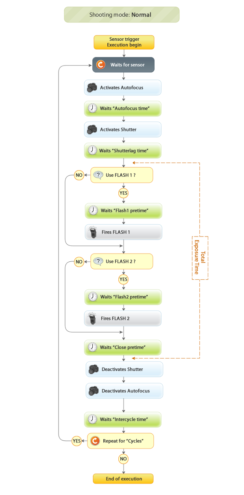

This run mode is used to take pictures based on the sensor readings. Main uses are “High Speed Photography” and “Nature photography”
Submenus
When you enter in the “Sensor trigger” option of the main menu, you will found this submenus.
- Config trigger: Defines the config parameters of this mode used according the “Life cycle of execution”.
- Config drops: Only if the “Device type” in the “System config” is equal to Electrovalve.
- Run: Entering this option will start the run mode according the Life cycle of execution. To cancel the execution, just press and hold one button until the LCD displays “Aborting…”
- Reset config: This option resets the config parameters of this run mode to the default values.
Config trigger
| Parameter | Values | Function |
|---|---|---|
| Sensor |
|
Define which type of sensor will be used in this mode. |
| Sensor limit |
|
Define the trigger limit of the sensor. The tunning mode of this limit is defined by the “Sensor tunning” parameter in the “System config“ |
| Shooting mode |
|
Determines the shooting mode used below in the life cycle of execution. |
| Autofocus time |
|
The time in milliseconds used by the camera autofocus. It is only necessary if the camera is set in AF mode. If manual focusing is set, this value should be set to 0. |
| Flash1 pretime |
|
Time in milliseconds to wait before firing the FLASH1. |
| Flash2 pretime |
|
Time in milliseconds to wait before firing the FLASH2. |
| Close pretime |
|
Time in milliseconds to wait before closing the shutter. |
| Cycles |
|
Number of times to repeat the life cycle of execution. (“Zero” is equal to endless repetitions) |
| Intercycle time |
|
Time in milliseconds to wait between each cycle. This parameter is often appropriate to allow enough time to the camera to process the final image. |
Config drops
The life cycle of execution don’t shows this drops functionality, but drops are generated always before “Waits for sensor” blocks in the diagram.
This parameters are used only if the electrovalve connected to the device port and configured in the “Device type” of the “System config”
| Parameter | Values | Function |
|---|---|---|
| Drops count |
|
Number of drops to make |
| Drops duration |
|
Time in milliseconds defining the duration of each drop |
| Drops interval |
|
Time in millisecond between each drop |
Life cycle of execution
The life cycle is the diagram that explains the execution and how each parameters are used when you run the sensor trigger mode.
There are three life cycles of execution. Each one are dependant of the “Shooting Mode” parameter of the “Config trigger” section.
- Normal mode
- Pre-Bulb mode
- Mirror Lock-Up mode
Shooting mode: Normal
This mode is intended to take pictures starting the process by a sensor but using the normal operation of the camera to take it. If you want to save the mechanical time of the normal operation of the camera to take high speed pictures, you should use the “Pre-Bulb mode” or the “Mirror Lock-up mode” described later.

Shooting mode: Pre Bulb
In this mode, the system is assuming that you set your camera in BULB mode and you will use one or two flashes to take the picture in a dark room. Using this mode you avoid all mechanical lags produced by the camera and take the photos with fastest time of response and the fastest time of exposure defined by the duration of the flash that you are using.

Shooting mode: Mirror Lock-Up
Your camera should have a internal option to previously look-up the mirror before fire the shutter to avoid mechanical lags. Use this mode in combination with this option in your camera to automatically look-up your mirror from Photoduino before wait for the sensor and take the picture as fast as possible and avoiding vibrations in your camera when take the picture.

Important notes
If the camera is not set to BULB mode, the total exposure time is then indicated by the selected shutter speed in the camera.
If the camera is set to autofocus mode, the needed time to focus depends on the scene, giving himself the chance that the shutter not fires because of lack of focus.